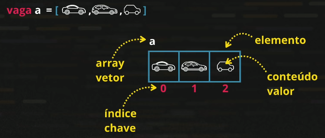
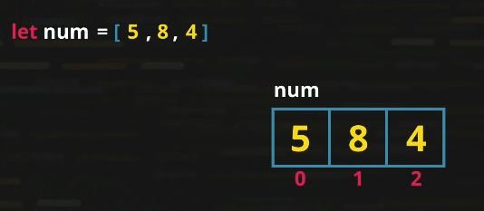

Variáveis simples so conseguem armazenar um valor por vez.
Variáveis compostas conseguem armazenar vários valores em uma mesma estrutura.
Como vimos anteriormente, para adicionar um valor à uma variável simples, precisamos criar várias linhas de código com um único valor a cada variável.
Em variáveis compostas, colocamos somente um identificador (uma variável).
Um array(ou vetor, ou variável composta), é uma variável que tem vários elementos, cada elemento é composto por seu valor e por uma chave de identificação.
Exemplos da aula:
Sintaxe: let/var x = []
Adicionamos os valores nessa variável separando por virgulas.
Seguiremos os exemplos da aula. let num = [5,8,4]
O primeiro valor da variável entra no índice 0, como mostra na imagem acima. Isso sempre acontecerá.
E se eu quiser acrescentar um valor na variável? Como faço?
Escrevemos num[3] = 6 para adicionar valores. Nesse exemplo estamos adicionando o valor 6 no índice 3, mesmo que esse índice ainda não exista, o JavaScript vai entender e vai criar um novo campo.
Exercícios: 016